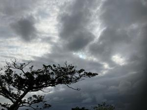
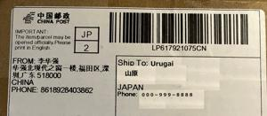
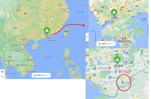

うるがいの話 ある日
最新: 送り先は中国から【うるがいの話 ある日】とは 一日だけのプログです
『うるがいの話』の最新一日だけのプログで、通信料が少なく経済的だ。カニの画像をクリックすると全ての日付が載る『うるがいの話』サイトを表示します
|
|
【うるがいの話】 うるがい(ｳﾙｶﾞｲ urugai)とは、『もずくがに』の名前でとても大きくなります。 |
|---|---|
|
|
【カミマヤーの話】 猫のことを方言でマヤーといいます。カミマヤー（kamimayaa）とは、神の猫のことです。 |
|
【たながぁの音楽】 たながぁ（ﾀﾅｶﾞｰ tanagaa）とは手長えびのことで、何種類かあり大きいのは車 エビぐらいになります。 |

|
【ぶながぁの話】 ぶながぁ(ﾌﾞﾅｶﾞｰ bunagaa)とは、赤い髪の毛、赤い身体、そして身長は１ｍ２０ｃｍ ぐらい、川の蟹を食べているの目撃された。場所は沖縄県国頭郡大宜味村のと ある村僕の隣近所に住んでいる爺さんから、聞いた話です。 |
|
|
【ギーマの話】 ギーマ(giima)とは、山原の里山に咲くスズランに似た、 花を付けます。実は食べられます、 気が付くと口の周りが紫になっています。 |
2023年04月27日 (木）送り先は中国から
15:16
  
アイホンのためのケース財布型が、この前届いた。アマゾンで注文の際に、届
くまで１７日間（実際は８日）かかるとのことだったので少し気になっていた
が、送り元が中国になっていた。どこなんだと調べてみた。
chatGPTへの問い合わせ
下記の宛先から郵便が届きました
日本語に翻訳していただけますか
FROM:李华强
华强北现代之窗一楼,福田区,深
圳,广东518000
回答
差出人：李華強
住所：広東省深セン市福田区華強北現代之窓1階 518000
フーン、ちなみに『ｉＰｈｏｎｅ 充電器 ２０Ｗ ＰＤ 急速充電』も購入
したがそれも中国からだった。
１５時１２分 ビットコインの総資産 ￥１１、２６２（↑２５２）